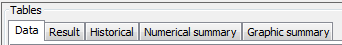
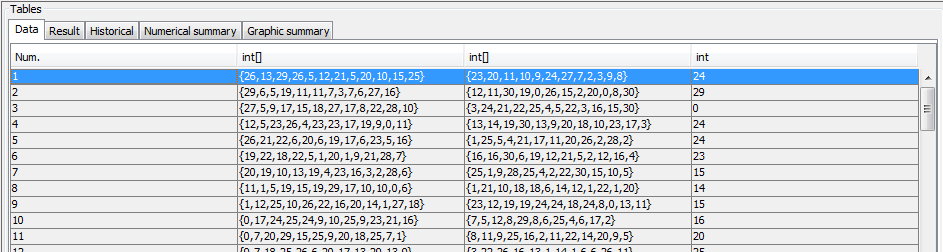
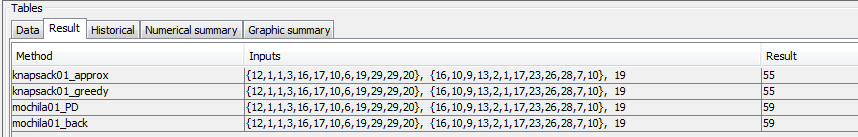
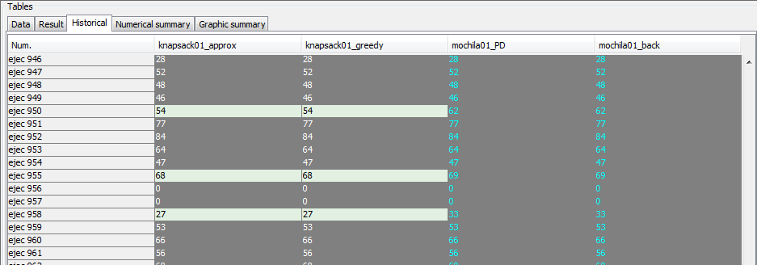
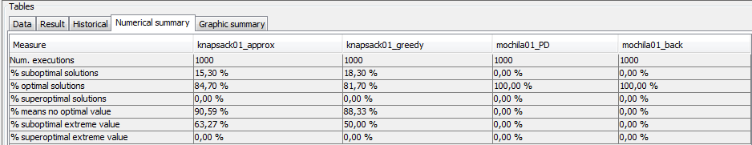
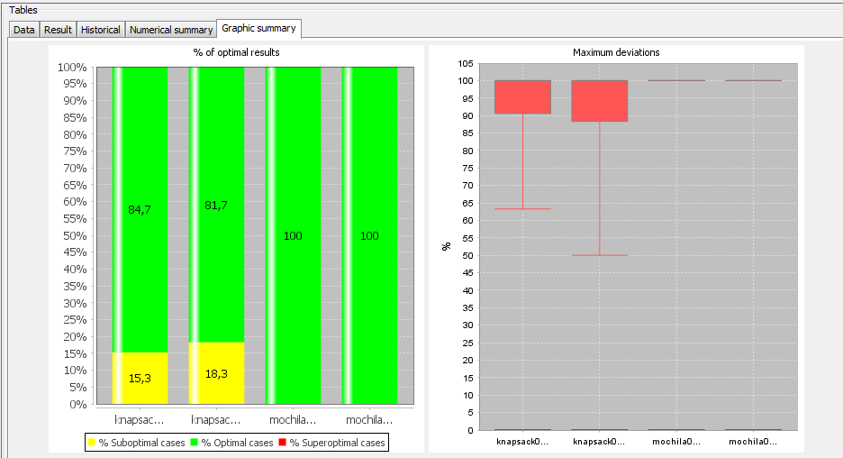

return
Tables panel
The appearance of the table panel is:

On the first tab is the table of data:

- Num.
Identifier of the data.
- Input data type:
Input data for the data type corresponding.
On the second tab is the table of results: for the various methods
with the same data input, are the output values of the execution.

- Methods:
Name of the methods.
- Input data:
The input data for that run.
- Output data:
The result data for that run.
On the third tab shows the historical table: each execution results
for each set of input data and each method.

- Run number
Run number.
- Results of each method:
Results of each method for each run number.
In the fourth tab shows the summary table: Percentage of solutions
optimal for each of the methods.

- Total executions:
Number of executions.
- Percentage of suboptimal results of each method:
Percentage of executions in which each method has suboptimal results.
- Percentage of optimal results for each method:
Percentage of executions in which each method has given optimal results.
- Percentage superoptimal results of each method:
Percentage of executions in which each method has superoptimal results.
- Percentage of average deviation of each method:
Mean percentage deviation of the no optimal results for each method.
- Percent maximum deviation superoptimal of each method:
Percent maximum deviation of the results superoptimal of each method.
- Percentage maximum deviation suboptimal of each method:
Percentage of maximum deviation of the suboptimal results of each method.
In the last tab shows the graphic summary for each of the methods.

- % of optimal results
- Maximum deviations
September 16, 2016